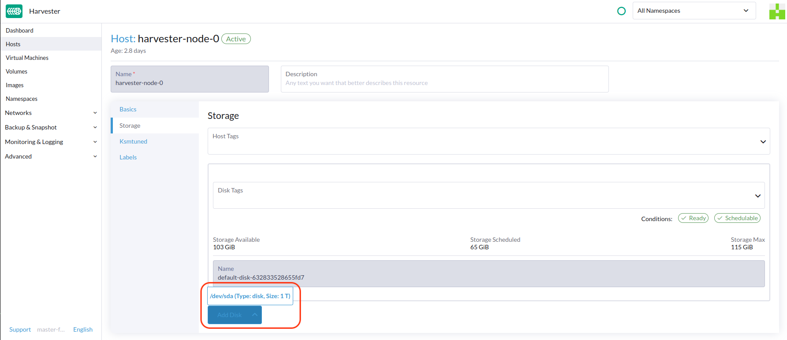

StorageClass
SUSE Virtualization utilise les StorageClasses pour décrire comment SUSE Storage doit provisionner des volumes. SUSE StorageLes StorageClasses peuvent correspondre à des stratégies de réplication, des stratégies de planification de nœuds ou des stratégies de planification de disques créées par les administrateurs du cluster. Ce concept est appelé profils dans d’autres systèmes de stockage.
|
La StorageClass par défaut Pour éviter ce problème, vous pouvez effectuer l’une des actions suivantes :
|
Pour des informations sur le support de la provision de volumes utilisant des pilotes d’interface de stockage de conteneurs externes (CSI), voir Support de stockage tiers.
Créer une StorageClass
-
UI
-
API
-
Terraform
|
Après qu’une StorageClass soit créée, les champs dans la section Paramètres et la plupart des autres options deviennent immuables. |
-
Allez à Avancé → StorageClasses.

-
Dans la section d’informations générales, configurez ce qui suit :
-
Nom : Nom de la StorageClass.
-
Description (facultative) : Description de la StorageClass.
-
Provisionneur : Provisionneur qui détermine le plugin de volume à utiliser pour provisionner des volumes.
-
-
Dans l’onglet Paramètres, configurez ce qui suit :
-
Nombre de répliques : Nombre de répliques créées pour chaque SUSE Storage volume. La valeur par défaut est
3. -
Délai d’expiration des répliques obsolètes : Nombre de minutes que SUSE Storage attend avant de nettoyer une réplique avec le statut
ERROR. La valeur par défaut est30. -
Sélecteur de nœud (facultatif) : Étiquettes de nœud à faire correspondre lors de la planification des volumes. Vous pouvez ajouter des étiquettes de nœud sur l’écran de configuration de l’hôte (Hôte → Modifier la configuration).
-
Sélecteur de disque (facultatif) : Étiquettes de disque à faire correspondre lors de la planification des volumes. Vous pouvez ajouter des étiquettes de disque sur l’écran de configuration de l’hôte (Hôte → Modifier la configuration).
-
Migratable : Paramètre qui active la migration en direct pour les volumes créés en utilisant le StorageClass. La valeur par défaut est
Yes.
-
|
Si un StorageClass avec un nombre de répliques de |
-
Dans l’onglet Personnaliser, configurez ce qui suit :
-
Stratégie de récupération : Stratégie de récupération qui s’applique aux volumes créés en utilisant le StorageClass. La valeur par défaut est
Delete.-
Supprimer : Supprime les volumes et les dispositifs sous-jacents lorsque la demande de volume est supprimée.
-
Conserver : Conserve le volume pour un nettoyage manuel.
-
-
Autoriser l’expansion de volume : Paramètre qui permet l’expansion de volume, ce qui implique le redimensionnement du périphérique de bloc et l’expansion du système de fichiers. Lorsque le paramètre est activé, vous pouvez augmenter la taille du volume en modifiant l’objet PVC correspondant.
Vous ne pouvez utiliser la fonction d’expansion de volume que pour augmenter la taille du volume.
-
Mode de liaison de volume : Paramètre qui contrôle quand la liaison de volume et la provision dynamique se produisent. La valeur par défaut est
Immediate.-
Immédiat : Lie et provisionne un volume une fois que le PVC est créé.
-
AttendreLePremierConsommateur : Lie et provisionne un volume une fois qu’une machine virtuelle utilisant le PVC est créée.
-
-
-
Cliquez sur Create.
apiVersion: storage.k8s.io/v1
kind: StorageClass
metadata:
annotations:
storageclass.beta.kubernetes.io/is-default-class: 'true'
storageclass.kubernetes.io/is-default-class: 'true'
name: single-replica
parameters:
migratable: 'false'
numberOfReplicas: '1'
staleReplicaTimeout: '30'
provisioner: driver.longhorn.io
reclaimPolicy: Delete
volumeBindingMode: Immediate
allowVolumeExpansion: trueresource "harvester_storageclass" "single-replica" {
name = "single-replica"
is_default = "true"
allow_volume_expansion = "true"
volume_binding_mode = "immediate"
reclaim_policy = "delete"
parameters = {
"migratable" = "false"
"numberOfReplicas" = "1"
"staleReplicaTimeout" = "30"
}
}Paramètres de localité des données
Vous pouvez utiliser le paramètre dataLocality lorsque au moins une réplique d’un SUSE Storage volume doit être planifiée sur le même nœud que le pod qui utilise le volume (dans la mesure du possible).
SUSE Virtualization prend officiellement en charge la localité des données. Cela s’applique même aux volumes créés à partir de images. Pour configurer la localité des données, créez une nouvelle StorageClass sur l’interface SUSE Virtualization (StorageClasses → Créer → Paramètres) et ajoutez ensuite le paramètre suivant :
-
Clé :
dataLocality -
Valeur :
désactivéoumeilleur-effort

Options de localité des données
SUSE Virtualization prend actuellement en charge les options suivantes :
-
désactivé: Lorsqu’il est appliqué, SUSE Storage peut ou non planifier une réplique sur le même nœud que le pod qui utilise le volume. Il s’agit de l’option par défaut. -
meilleur-effort: Lorsqu’il est appliqué, SUSE Storage tente toujours de planifier une réplique sur le même nœud que le pod qui utilise le volume. SUSE Storage n’interrompt pas le volume même lorsqu’une réplique locale est indisponible en raison d’une limitation environnementale (par exemple, espace disque insuffisant ou étiquettes de disque incompatibles).
|
SUSE Storage fournit une troisième option appelée |
Pour plus d’informations, voir Localité des données dans la documentation SUSE Storage.
Paramètres de l’importateur de données conteneurisé (CDI)
SUSE Virtualization s’intègre avec le Importateur de données conteneurisé (CDI) pour gérer la gestion des images de VM pour les StorageClasses suivantes :
-
Longhorn V2 Data Engine
-
LVM
-
Stockage tiers
Vous pouvez utiliser l’interface utilisateur SUSE Virtualization ou les annotations CDI pour remplacer les paramètres par défaut des attributs CDI de StorageClass.
|
L’interface utilisateur SUSE Virtualization ne prend actuellement pas en charge l’utilisation de CDI avec le stockage tiers. Vous devez appliquer les annotations CDI SUSE Virtualization directement à la StorageClass de stockage tiers. |
Pour activer l’édition des paramètres CDI pour les opérations de jour 2, SUSE Virtualization fournit des attributs de StorageClass qui mettent automatiquement à jour les paramètres CDI sous-jacents.
Chaque champ de l’écran Paramètres CDI correspond à une annotation dans la StorageClass.
| Champ de l’interface utilisateur | Annotation | Description | Valeurs prises en charge | Par exemple : |
|---|---|---|---|---|
Mode de volume / Modes d’accès |
|
Mode de volume PVC par défaut et modes d’accès |
Objet JSON avec modes de volume et modes d’accès |
|
Classe d’instantané de volume |
|
Nom de la classe d’instantané de volume à utiliser lors de la prise d’instantanés des images de machines virtuelles sous cette StorageClass. Ce paramètre s’applique uniquement lorsque vous utilisez la stratégie de clonage |
Nom de VolumeSnapshotClass valide |
|
Stratégie de Clonage |
|
Stratégie de clonage à utiliser pour les volumes créés avec des images de VM qui utilisent cette StorageClass. |
|
|
Frais de Système de Fichiers |
|
Pourcentage de frais de système de fichiers à prendre en compte lors du calcul de la taille du PVC. |
Valeur décimale entre 0 et 1 avec un maximum de 3 chiffres |
|
Exemple d’une configuration YAML de StorageClass :
apiVersion: storage.k8s.io/v1
kind: StorageClass
metadata:
name: lvm
annotations:
cdi.harvesterhci.io/storageProfileCloneStrategy: snapshot
cdi.harvesterhci.io/storageProfileVolumeModeAccessModes: '{"Block":["ReadWriteOnce"]}'
cdi.harvesterhci.io/storageProfileVolumeSnapshotClass: lvm-snapshot
cdi.harvesterhci.io/filesystemOverhead: '0.05'|
Évitez de modifier directement le profil de stockage ou le CDI. Au lieu de cela, permettez au contrôleur SUSE Virtualization de synchroniser et de persister la configuration du profil de stockage grâce à l’utilisation des annotations CDI. |
Les valeurs par défaut pour les StorageClasses pris en charge sont les suivantes :
-
Longhorn V2 Data Engine
-
cdi.harvesterhci.io/storageProfileCloneStrategy:"copy" -
cdi.harvesterhci.io/storageProfileVolumeSnapshotClass:"longhorn-snapshot"
-
-
LVM
-
cdi.harvesterhci.io/storageProfileVolumeModeAccessModes:'{"Block":["ReadWriteOnce"]}' -
cdi.harvesterhci.io/storageProfileCloneStrategy:"snapshot" -
cdi.harvesterhci.io/storageProfileVolumeSnapshotClass:"lvm-snapshot"
-
-
Stockage tiers : Voir
storagecapabilities.godans le dépôt CDI. Si le provisionneur n’est pas répertorié, vous devez spécifier l’annotationcdi.harvesterhci.io/storageProfileVolumeModeAccessModes.
Cas d’utilisation
Scénario HDD
Avec l’introduction de StorageClass, les utilisateurs peuvent désormais utiliser HDDs pour le stockage à froid, qu’il soit hiérarchisé ou destiné à l’archivage.
|
Les HDD ne sont pas recommandés pour les clusters RKE2 invités ou pour les machines virtuelles nécessitant des disques performants. |
Pratique recommandée
Tout d’abord, ajoutez votre HDD sur la page Host et spécifiez les étiquettes de disque selon vos besoins, telles que HDD ou ColdStorage. Pour plus d’informations sur la façon d’ajouter des disques supplémentaires et des étiquettes de disque, consultez Gestion multi-disques pour plus de détails.


Ensuite, créez un nouveau StorageClass pour le HDD (utilisez les étiquettes de disque ci-dessus). Pour les disques durs avec une grande capacité mais une performance lente, le nombre de répliques peut être réduit pour améliorer les performances.

Vous pouvez maintenant créer un volume en utilisant le StorageClass ci-dessus avec des HDD principalement pour le stockage à froid ou l’archivage.